>_ How did the adversary get the credentials in the first place?
At this point, you're pretty sure someone made a malicious commit to the Git repo, causing the data exfiltration. The goal of this step is to figure out how the attacker got the credentials of the Git committer.
To start, note down the username of the Git committer from "Shadow Commit." That person's password will be the flag for this assignment.
As part of your forensics, you've been given access to Personalyze.io's backup server, which has a full copy of all the data from their company server.
The flag for this challenge is the password for the credentials that you found. (Only the password — no username.)
It starts with "wicys".
You'll need a web browser and a way to open .tar.gz files. On Windows, use WinRAR or 7Zip. On Mac, it's available on the command line or through various free apps.
You'll need a good text editor like VSCode to view some of the files.
There is one part that requires a working Python installation; however, you can also skip it and still find the answer fairly easily.
Opening the provided SecureVault Enterprise platform, we are presented with a login screen. The obvious attempts — admin:password or admin:admin — fail. With the pattern of not-best-practices that Personalyz.io seems to follow, let's get creative.
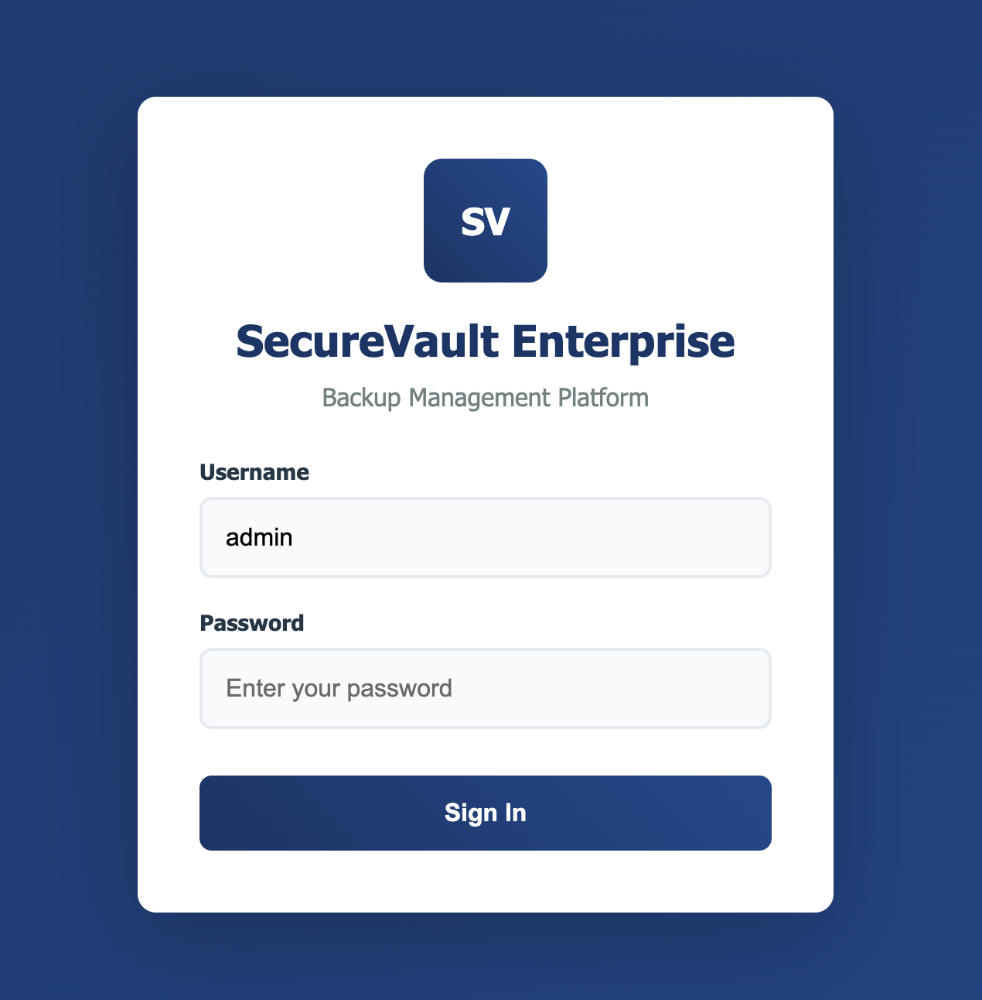
SecureVault Enterprise — login screen
Inspect the source code of the page using Inspect or View Source:
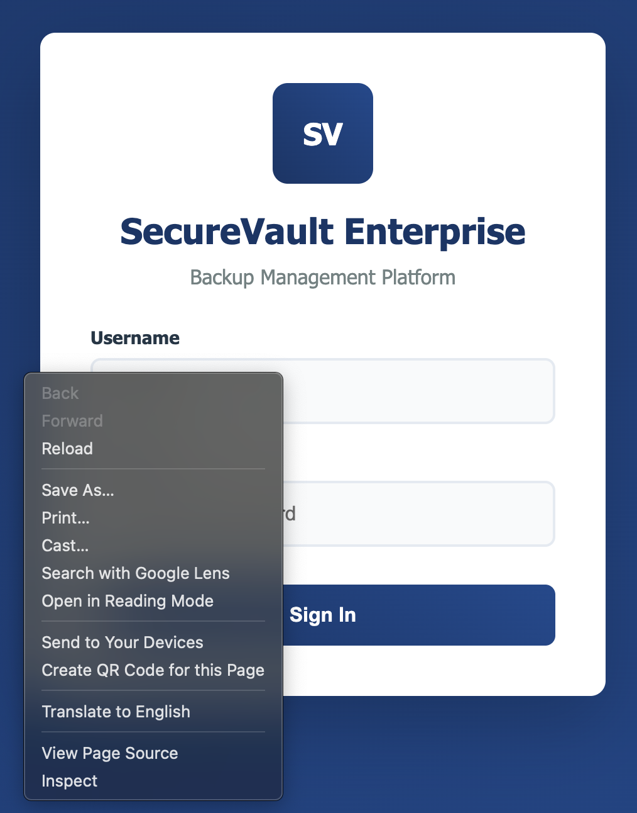
Browser — inspecting page source code
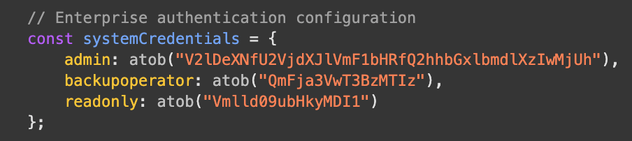
Source code — hard-coded credentials for admin, backupoperator, and readonly users found!
Digging into the page's source code, we found hard-coded system credentials configured on the page for users: admin, backupoperator, and readonly. Note: this is absolutely not best practice — all authentication should be done server-side, not client-side.
The credentials are encoded with Base64. Use CyberChef to decode:
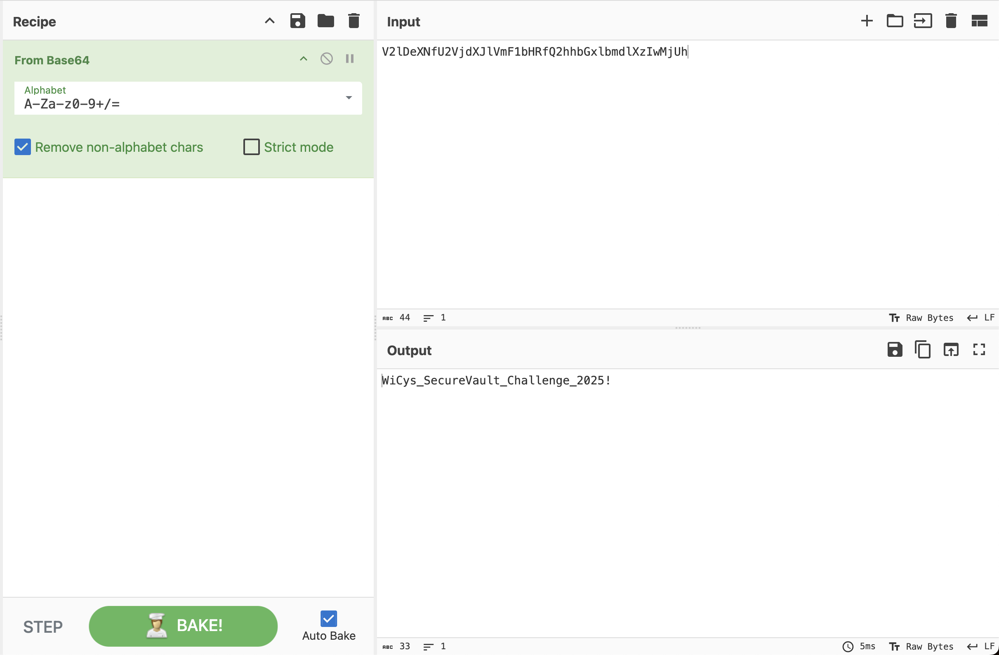
CyberChef — From Base64 reveals the admin password
Use the converted password to log in as admin to SecureVault. Once logged in, download the main-server-01-backup.tar.gz file:
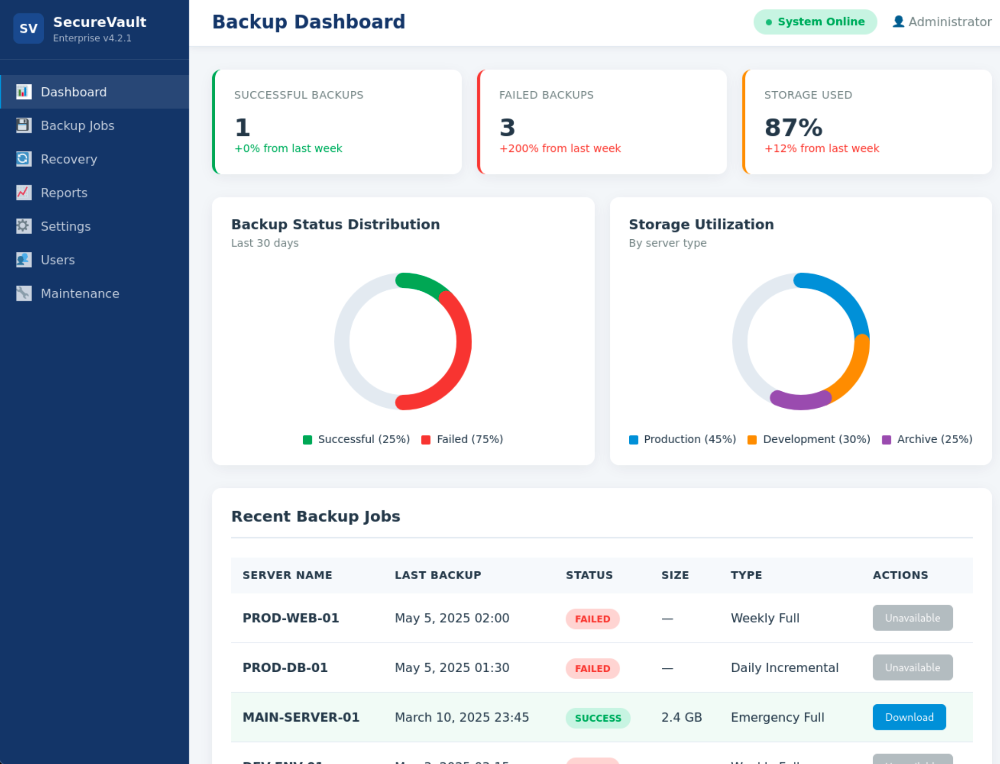
SecureVault — main-server-01-backup.tar.gz available for download
Organize and extract the file on your Linux machine:
| Argument | Description |
| tar | Program used for working with .tar, .tar.gz or .tgz archives |
| -x | Extract the archive |
| -z | Decompress a gzip file |
| -f | Specifies the filename |
Note: -x, -z, and -f are combined into one argument -xzf
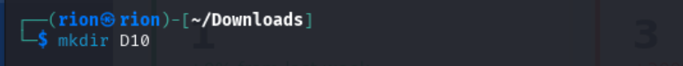
Terminal — creating the D10 directory
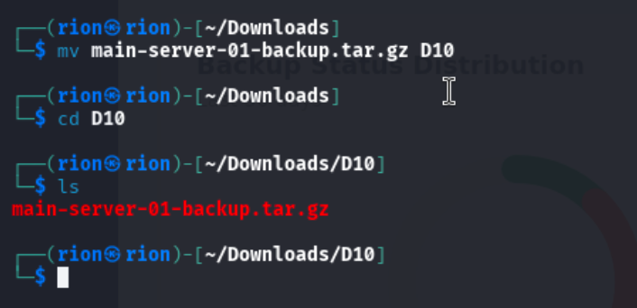
Terminal — extracting main-server-01-backup.tar.gz
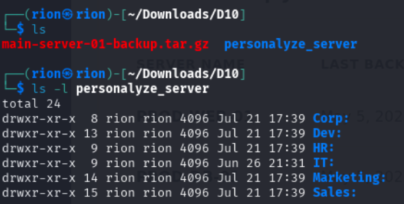
personalyze_server directory — exploring the extracted backup
Poking around inside personalyze_server, I found files identifying IT as the Department for Password Troubleshooting. Inside the IT directory, I found a Slack Archive folder containing slack_viewer.py. Run it with Python 3:
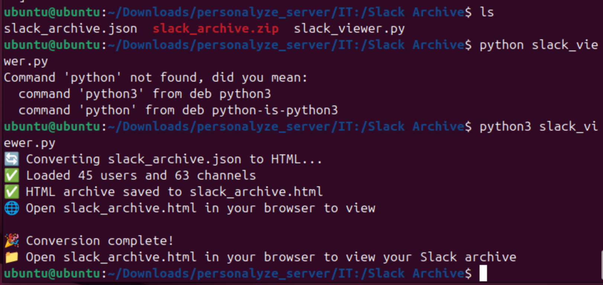
slack_viewer.py — opens a browser window with the Slack archive
A new browser window opened with the Slack archives. Using the browser's Find tool, I searched for the keyword Password to identify any areas where users might be sending plaintext passwords (big no-no!):
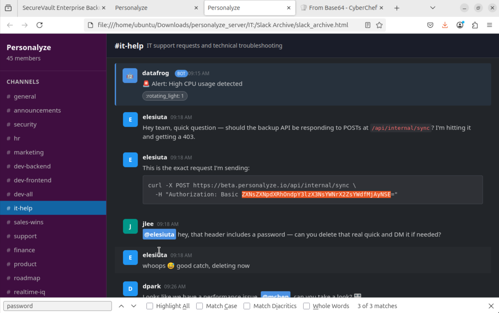
Slack archive — user jlee flags a curl command with a password in the header, encoded in Base64
We got a hit from a curl command. User jlee identified that the header includes a password and flagged it for deletion. Notice the familiar Base64 format! Decode it in CyberChef:
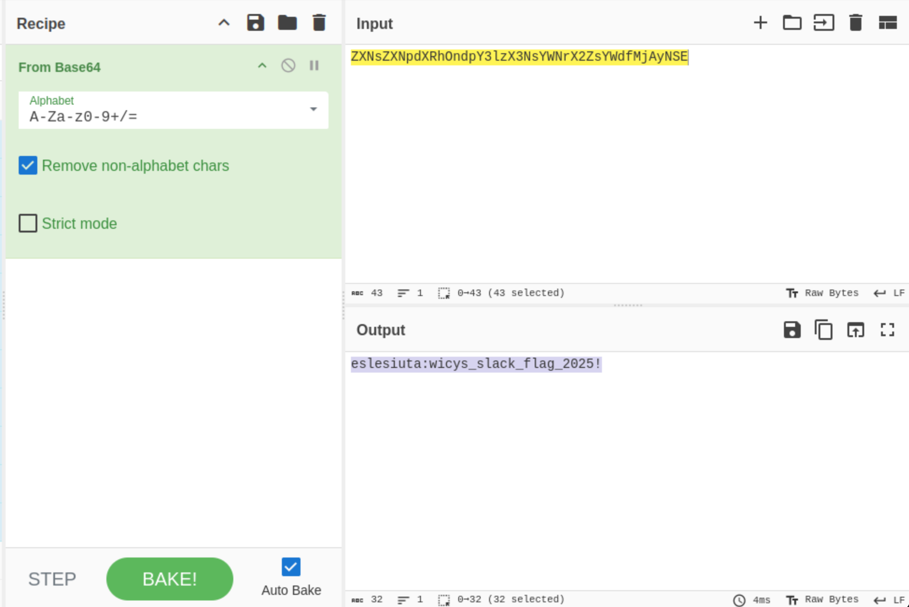
CyberChef — From Base64 reveals the credentials — the password starting with "wicys" is our flag
In this challenge, we identified how the user's credentials were compromised.
This tactic falls under TA0006 — Credential Access as Shadow Gopher leveraged a compromised user's account to make an unauthorized change to the source code in the GitHub repository.
This technique falls under T1552.001 — Unsecured Credentials: Credentials in Files and T1552.008 — Unsecured Credentials: Chat Messages as Shadow Gopher found credentials stored in the SecureVault's source code that allowed downloading slack archives containing plaintext credentials.
Shadow Gopher accessed SecureVault using unsecured credentials found in the source code to download a backup file containing Slack channel archives with chat messages that contained plaintext credentials.
| Mitigation | Description |
| M1047 — Audit | Search for files containing passwords and take action to reduce the risk of exposure when found. |
| M1027 — Password Policies | Establish policies that prohibit passwords being stored in files. Leverage tools such as password managers that allow for secure storage and secure sharing where appropriate. |
| M1018 — User Account Management | Accounts should be tied to a specific user. If a service account is used, a PAM solution should be implemented to identify who and when the user accessed an application. |
| M1017 — User Training | Ensure users are not sharing credentials to critical and non-critical systems. |
| Data Source | Description |
| DS0015 — Application Log | Monitor applications for user logins, configuration changes or access to sensitive resources. |